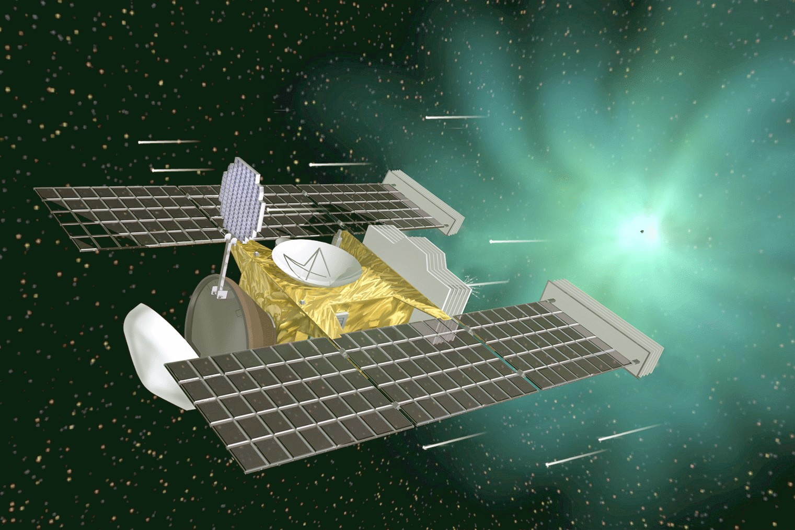
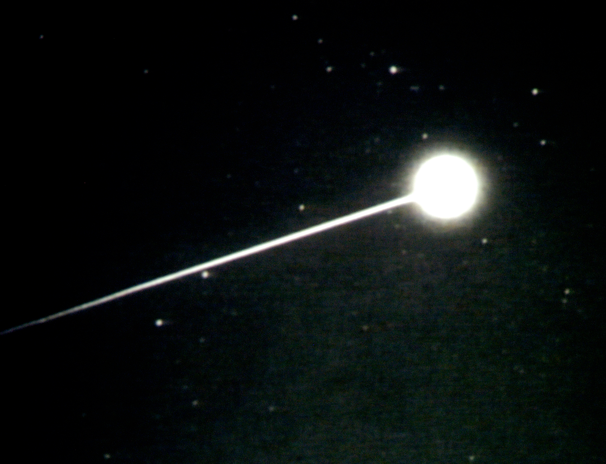

C2.1 — Introduction to Variable Mass Systems#
C2.1.1 — Motivation#
Most introductory mechanics problems assume that the mass of the object remains constant.
For example, when we analyze a projectile, a sliding block, or a planet in orbit, we usually treat the mass as fixed. In those cases, changes in momentum come only from changes in velocity.
However, many important systems do not behave this way.
Examples include:
rockets ejecting fuel
leaking containers
raindrops collecting water
conveyor belts carrying material
jet engines expelling air and fuel
astrophysical objects gaining mass through accretion
In these systems, momentum changes because:
the velocity may change
the mass may change
mass may enter or leave the system
external forces may act during the process
The goal of this module is to develop a careful momentum-based approach for systems whose mass changes with time.
C2.1.2 — The Fundamental Principle#
For variable mass systems, our starting point will be the impulse-momentum theorem.
A small impulse changes the momentum of a system according to
This will be our fundamental principle for analyzing variable mass systems.
Momentum is defined as
For constant mass systems, this is usually straightforward. For variable mass systems, we must be more careful because both \(m\) and \(\vec{v}\) may change.
C2.1.3 — Why \( \vec{F} = \dfrac{d}{dt}(M\vec{V}) \) Requires Care#
At first glance, it may seem natural to analyze a variable mass system by writing
After all, momentum is defined as
so differentiating the momentum appears reasonable.
However, this expression can become misleading if applied carelessly.
The issue is subtle but extremely important.
Newton’s second law is fundamentally formulated for a system with a fixed identity — that is, a clearly defined collection of particles. In other words, the quantity
represents the momentum of:
a single particle, or
the center of mass of a fixed collection of matter.
In a variable mass system, the actual matter making up the system changes with time.
Mass may:
leave the system,
enter the system,
or exchange momentum with the surroundings.
This means we must carefully track which particles belong to the system at each instant.
The main difficulty is that mass entering or leaving the system may have a velocity different from the system itself.
For example, consider a rocket ejecting fuel.
The rocket moves with velocity
but the expelled fuel does not simply move with the rocket. Instead, the fuel leaves with a velocity relative to the rocket known as the exhaust velocity.
Because the escaping mass carries momentum away from the rocket, we cannot simply treat the rocket as though all its mass continues moving together with velocity \(\vec{V}\).
The changing mass itself transports momentum.
This is why variable mass systems are most safely analyzed using the impulse-momentum theorem.
A force changes momentum according to
and
In difference form, we have:
The impulse-momentum theorem allows us to carefully account for:
momentum carried into the system,
momentum carried out of the system,
and external impulses acting during the process.
This leads to the correct treatment of rockets, jet propulsion, accreting systems, leaking containers, and many other important physical systems.
The standard example used to illustrate these ideas is a spacecraft moving through space while either:
ejecting fuel,
or accumulating interstellar dust.
In both situations, the changing mass transports momentum and must be handled carefully.
C2.1.4 — Momentum Flux and Mass Transfer#
One of the most important ideas in variable mass systems is that mass can transport momentum into or out of a system.
When mass crosses the system boundary, it carries momentum with it.
This transport of momentum is often called momentum flux.
Consider a small amount of mass \(dm\) moving with velocity \(\vec{u}\).
Its momentum is
If this mass enters or leaves the system during a small time interval \(dt\), then the associated momentum transfer rate is
This term represents momentum being transported by the moving mass itself.
In variable mass systems, momentum can therefore change in two distinct ways:
External forces may apply impulses.
Mass entering or leaving the system may carry momentum across the system boundary.
Both effects must be included in a complete analysis.
For example:
Rocket exhaust carries momentum away from the rocket.
Incoming dust transfers momentum to a spacecraft.
Water entering a bucket brings momentum into the system.
Fuel entering a jet engine contributes momentum flow.
In all these cases, the changing mass itself transports momentum.
A common mistake is to assume that all mass in a system always moves with the same velocity.
In variable mass systems, incoming or outgoing mass often has a velocity different from the main system.
This relative motion is essential and cannot be ignored.
The key strategy for solving variable mass problems is therefore:
Carefully define the system.
Identify mass entering or leaving the system.
Determine the velocity of that mass relative to an inertial frame.
Apply the impulse-momentum theorem:
Include all momentum carried across the system boundary.
This framework will allow us to correctly derive the rocket equation and analyze many other important physical systems.
C2.1.5 — Example: Stardust Collecting Cosmic Dust#
Example — Stardust Collecting Cosmic Dust
NASA’s Stardust spacecraft was designed to collect and return samples of cosmic dust and cometary material from comet Wild 2. It was the first U.S. mission to return extraterrestrial material from outside the Moon’s orbit.

Fun Fact
Your instructor was part of a sub-mission to the Stardust mission that investigated the emission spectra as Stardust traveled through the atmosphere. The heat shield on Stardust was an experimental layer, and the emission spectra helped reveal how the shield behaved during atmospheric entry.
For more information, see NASA Hypervelocity Re-entries.
Here is a sample picture of Stardust taken by the Utah State University group led by my Ph.D. supervisor, Dr. Michael Taylor.

Suppose Stardust has mass \(M\) and travels in straight-line motion with constant velocity \(\vec{V}\) during a segment of its journey.
During this time, Stardust collects a small amount of cosmic dust with differential mass \(dm\). Before impact, the dust moves with constant velocity \(\vec{u}\).
Important: We define the system as Stardust together with the dust that will be accumulated.
Assume that a net external force \(\vec{F}\) acts on this system.
We use the differential form of the impulse-momentum theorem:
Before the dust is accumulated, the momentum is
After the dust is accumulated, Stardust and the dust move together with velocity \(\vec{V}\). Therefore,
The change in momentum is
Substituting,
Simplifying,
Using the impulse-momentum theorem,
we obtain
Therefore,
Physical Interpretation
The incoming dust initially moves with velocity \(\vec{u}\) but ultimately moves with velocity \(\vec{V}\) after joining Stardust.
Therefore, the dust undergoes a momentum change.
That momentum change requires an impulse, which must come from the external force acting on the system.
Physical Interpretation
As Stardust accumulates dust, the incoming particles must be accelerated from velocity \(\vec{u}\) to the spacecraft velocity \(\vec{V}\).
That requires a momentum change of
Consequently, Stardust must exert a force on the incoming dust in order to continuously accelerate the dust to its own velocity.
By Newton’s third law, the dust exerts an equal and opposite force on Stardust.
Therefore, if no additional external force were applied, Stardust would generally slow down or change velocity as it accumulated dust.
To maintain constant velocity, an external force of magnitude
must act on the spacecraft system.
In practice, this force could be supplied by an onboard propulsion system not considered part of the system we considered above.
Wrong Approach
A tempting but incorrect method is to write
Applying the product rule gives
Since the velocity is constant,
so this predicts
However, this is incorrect because it ignores the momentum already carried by the incoming dust.
The correct result is
The missing term arises because the incoming mass has its own velocity before joining the spacecraft.
Conclusion
This example demonstrates why variable mass systems must be analyzed carefully.
The safest approach is to begin with the impulse-momentum theorem and explicitly track the momentum carried across the system boundary.
Box Activity — Imperial Cargo Sled
An Imperial cargo sled moves through deep space by ejecting ionized plasma backward.
Assume the sled moves only along the \(x\)-direction.
At time \(t\):
the sled moves with speed \(v\),
the total mass of the sled is \(m\),
plasma is expelled backward with speed \(u\) relative to the sled,
plasma is expelled at a constant rate \(k\).
The mass of the empty sled together with the pilot is
Initially, the sled carries plasma fuel with mass
Assume:
no external forces,
straight-line motion,
constant exhaust speed.
Tasks
Determine the total mass of the sled as a function of time.
Starting from conservation of momentum in the \(x\)-direction,
derive an expression for the acceleration of the sled.
Show that the acceleration is
Determine the speed of the sled when all plasma fuel has been exhausted.
Activity solution
Step 1 — Determine the Mass Function
The empty sled and pilot have mass
Initially, the fuel mass is
Therefore, the initial total mass is
Since plasma is expelled at a constant rate \(k\),
Step 2 — Apply Conservation of Momentum
Since there are no external forces,
We now examine the momentum before and after a small amount of plasma is expelled.
Initial Momentum
Before ejection, the total mass is
and the sled speed is
Thus,
Final Momentum
After ejection:
the sled mass is \(m\),
the sled speed becomes \(v+dv\),
the expelled plasma has mass \(dm\).
Since the plasma moves backward relative to the sled with speed \(u\), its speed relative to the inertial frame is
Therefore, the final momentum is
Step 3 — Compute the Momentum Change
Conservation of momentum gives
Substituting,
Expanding,
Canceling common terms gives
The term
is second order and is neglected.
Thus,
Dividing by \(dt\),
Because the fuel is expelled at constant rate \(k\),
Therefore,
Using
we obtain
Hence,
Step 4 — Determine When the Fuel Runs Out
Fuel is exhausted when only the empty sled remains:
Using
we find
Thus,
and therefore
Step 5 — Determine the Final Speed
From the acceleration equation,
Integrate from:
\(v=0\) at \(t=0\),
to \(v=v_f\) at \(t=t_f\).
Thus,
The left side becomes
Let
Then
or
Substituting,
Evaluating,
Therefore,
Using logarithm properties,
Thus,